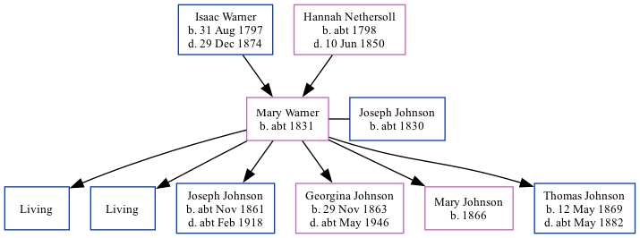

Mary Ann Johnson (née Warner) c1831 -
[ Home ] | [ Calendar ] | [ Surnames Index ] | [ Family History ]The child of Isaac Warner (a laborer) and Hannah Nethersoll, Mary Warner, the three times great-aunt of Nigel Horne, was born in St Peters, Thanet, Kent, England c. 18311, was baptized there on Jun 12, 1831 andhad 6 children with Joseph Johnson (an agricultural laborer): Frederick Joseph, Alfred, Joseph, Georgina Elizabeth, Mary A and Thomas, along with 2 surviving children.
Throughout her life, she lived at Callis Court, St Peters, Thanet, Kent, England on Jun 6, 18411; and at 1 Serene Place, Broadstairs, Kent on Apr 2, 18712 (when she was living with her father, Isaac).
Parents
- Isaac was born on Aug 31, 1797
- Hannah was born c. 1798
Children
- Joseph was born c. Nov 1861
- Georgina Elizabeth was born on Nov 29, 1863
- Mary A was born in 1866
- Thomas was born on May 12, 1869
Citations
- 1841 England, Wales & Scotland Census - Findmypast (was age 10)
- 1871 England, Wales & Scotland Census - Findmypast (was age 39 and the wife of the head of the household)
Media
1841 England, Wales & Scotland Census Transcription - GBC-1841-0013965178
1871 England, Wales & Scotland Census - GBC/1871/0014308851
Kent Baptisms - GBPRS/CANT/B/96349133
Family Tree
Generated by Ged2Site. Last updated on Jul 20, 2025